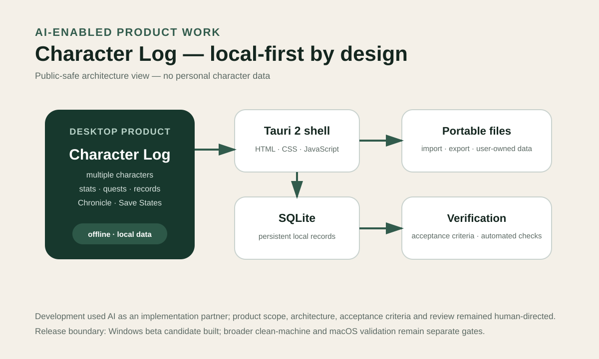

Software & Digital Products
Character Log
A local-first desktop product shaped through product definition, data modelling, scope control and AI-assisted implementation.

The problem
Build a useful desktop product without making the cloud or an AI provider part of the core runtime.
Character Log began as a personal character and progression tracker, but I wanted the underlying system to remain flexible enough to support different character types while keeping data local and user-owned.
That meant making product decisions around scope, persistence, portability and compatibility before treating implementation as the main problem.
My role
Product definition first, AI-assisted implementation second.
- Defined the product problem, use cases and local-first principles.
- Set acceptance criteria and scope boundaries.
- Designed the information architecture and data model.
- Directed iterative implementation using AI coding assistance.
- Reviewed behavior, tested workflows and drove corrections.
- Separated later privacy/security experiments from the canonical beta candidate.
Implementation
Tauri + JavaScript + SQLite, with AI outside the user's runtime.
The application uses a Tauri desktop shell, HTML/CSS/JavaScript frontend and SQLite local persistence. Its working product scope includes multiple-character support, import/export, persistent structured data and automated checks.
AI supported coding, debugging, documentation and verification during development. Product definition, requirements, architecture decisions, acceptance criteria and review remained my responsibility.
Current outcome
A functioning Windows beta candidate with clear next release gates.
A Windows v0.4.0 installer has been built alongside documented architecture, local persistence, import/export and automated checks.
Current status: the Windows beta candidate is built; clean-machine Windows validation and real macOS hardware validation remain the next release gates.